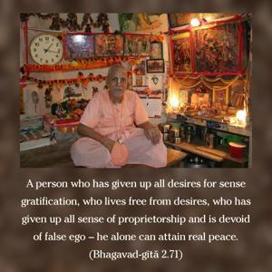
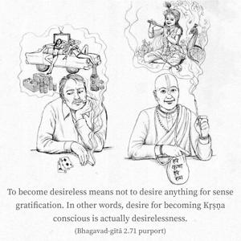
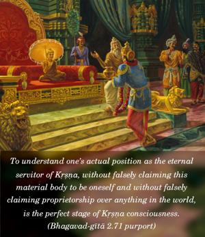
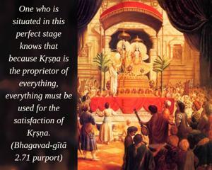
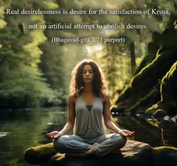
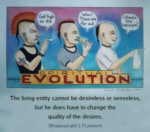

A person who has given up all desires for sense gratification, who lives free from desires, who has given up all sense of proprietorship and is devoid of false ego – he alone can attain real peace.






To become desireless means not to desire anything for sense gratification. In other words, desire for becoming Kṛṣṇa conscious is actually desirelessness. To understand one’s actual position as the eternal servitor of Kṛṣṇa, without falsely claiming this material body to be oneself and without falsely claiming proprietorship over anything in the world, is the perfect stage of Kṛṣṇa consciousness. One who is situated in this perfect stage knows that because Kṛṣṇa is the proprietor of everything, everything must be used for the satisfaction of Kṛṣṇa. Arjuna did not want to fight for his own sense satisfaction, but when he became fully Kṛṣṇa conscious he fought because Kṛṣṇa wanted him to fight. For himself there was no desire to fight, but for Kṛṣṇa the same Arjuna fought to his best ability. Real desirelessness is desire for the satisfaction of Kṛṣṇa, not an artificial attempt to abolish desires. The living entity cannot be desireless or senseless, but he does have to change the quality of the desires. A materially desireless person certainly knows that everything belongs to Kṛṣṇa (īśāvāsyam idaṁ sarvam), and therefore he does not falsely claim proprietorship over anything. This transcendental knowledge is based on self-realization – namely, knowing perfectly well that every living entity is an eternal part and parcel of Kṛṣṇa in spiritual identity, and that the eternal position of the living entity is therefore never on the level of Kṛṣṇa or greater than Him. This understanding of Kṛṣṇa consciousness is the basic principle of real peace.